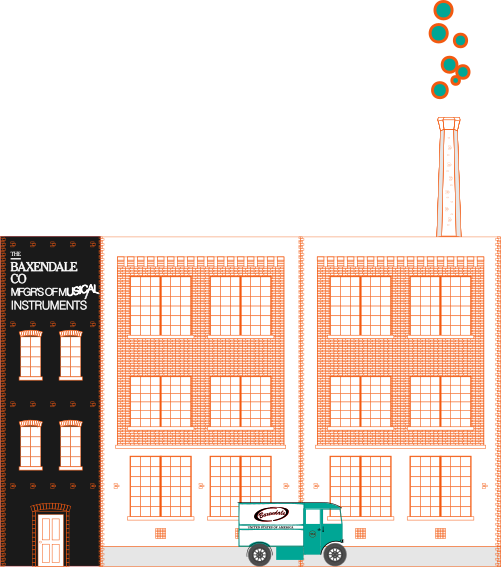
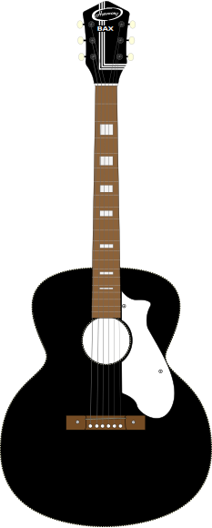
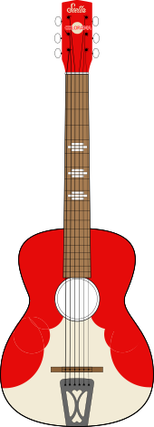
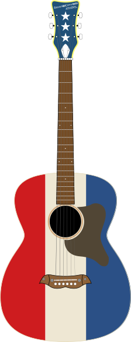
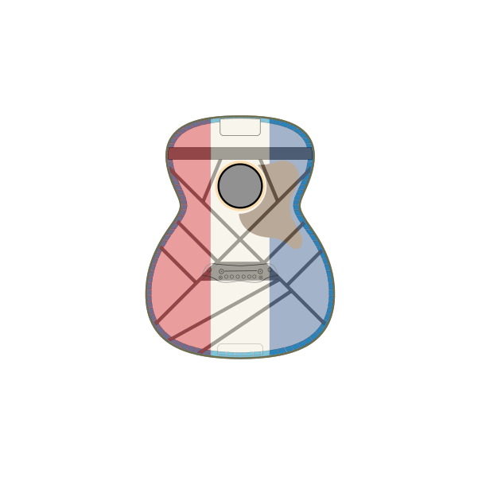
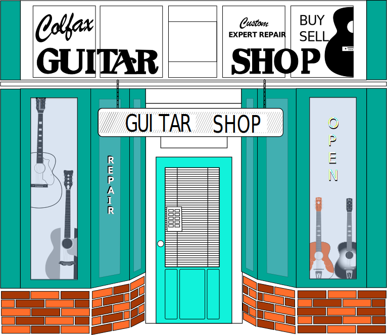

History:
From the 1940’s onwards, there were two main players in the department store boom of the
era:
Sears and Roebuck, and Montgomery Ward. These huge nodes within networks across America stocked everything from
fishing tackle and groceries to musical instruments.
Big-time producers of the musical instrument lines were the Harmony Company, and Kay Musical Instruments: both
making guitars and amplifiers that ended up with different branding names including Airline, Biltmore, Kent, Knox,
and Silvertone, as well as Kay and Harmony in their own right.

Catalogue:
Iconic in many households, varied levels of quality from the beginner level Stella, to
higher
end models such as the Roy Smeck, and Buck Owens editions.
While the quality of tone woods differed, one thing is consistent, they all had solid top, back, and sides, often
made from Spruce,
Birch, or Mahogany.

Downturn:
As economic measures favored using less desirable source materials and the electric guitar
became more of a prolific fashion item, acoustic guitar quality started to suffer.
By the mid 1970’s Harmony and Kay had ceased production. From the 1890’s to mid 1960’s, it is estimated that
Harmony
Company alone, produced approximately ten million instruments.

Rebirth:
When the 90’s arrived, popular music was starting to rebel against the mechanical sheen of
the
80’s.
Cheaper guitar models came to the fore with the pawn shop guitar and amp movement for musicians in search of more
cranky and authentic sounds.
Unplugged:
When Pat Smear played a Buck Owens Harmony on Nirvana’s live recordings for MTV unplugged,
it
created a surge in popularity.
Renewed interest in unique models resurfaced, continuing to the present day with artists such as Jack White, Dan
Auerbach and Alabama Shakes.

Illumination:
After building and repairing guitars for many years, Scott found himself at Gruhn Guitars in
Nashville, home to some of the most desirable and valuable guitars.
While there, Scott illuminated many guitars to uncover why some sounded better than others, carefully documenting
models and applying to his own builds.

Colfax:
From 1998 Scott operated the Colfax Guitar Shop in Denver Colorado, becoming a
one-stop-shop
for guitar restoration & repairs for touring musicians from the Bluebird Theatre.
Scott’s son, John a future master guitar builder, was apprenticing on Harmony and Kay guitars, learning
neck-resets,
re-fret’s, and deeper structural work.

Conversion:
After acquiring the basics, they started experimenting with re-builds, discovering the
rebuilds rivaled guitars of many times the price and prestige.
What better place to A-B test an idea, than in the store. One day, a customer played a round of vintage
guitars
and exclaimed “this weird old Harmony is the best sounding guitar in the store”, the Baxendale Conversion was
born.